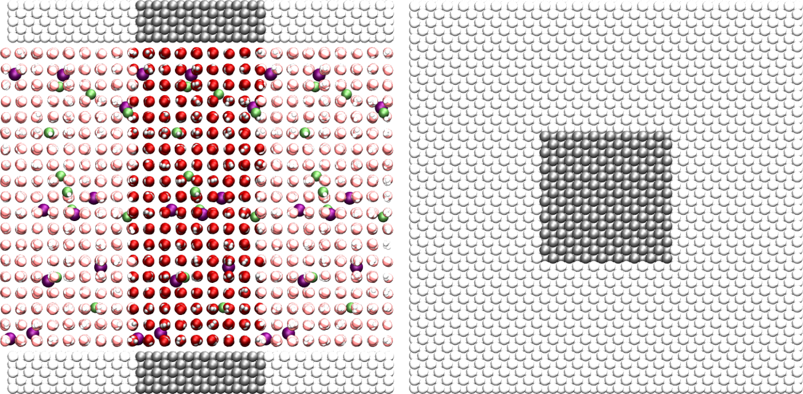
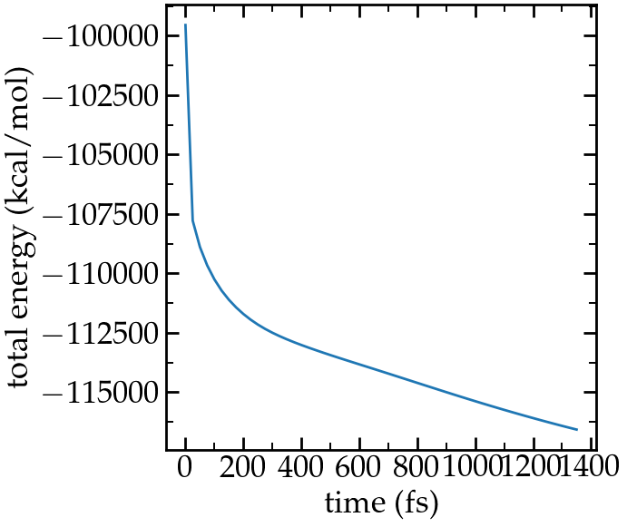
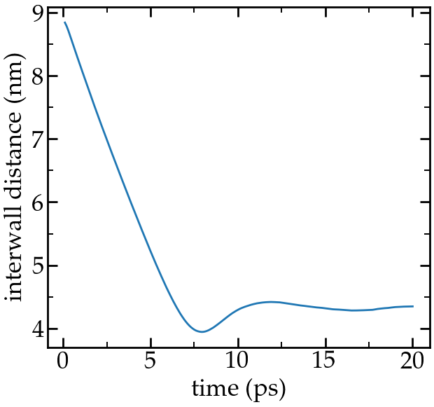
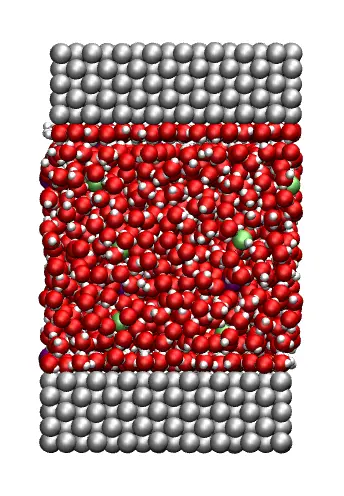
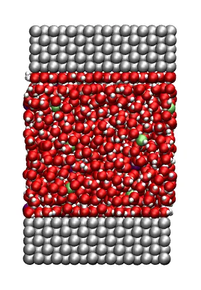

Nanosheared electrolyte
Molecular dynamics simulation of an aqueous NaCl solution sheared between two solid walls

The objective of this tutorial is to use molecular dynamics and simulate an electrolyte confined between two rigid carbon walls. There are four main parts to this tutorial:
- System generation - First, the electrolyte and the two walls are generated using LAMMPS internal commands.
- Minimisation - Seconds, an energy minimisation is performed to bring the system in a more favorable configuration.
- System equilibration - Third, the system is equilibrated at a pressure of 1 atm and temperature of 300 K.
- Induced shearing - Finally, a shearing of the solution is induced by the motion of the two walls.
System generation
Create a new folder called SystemCreation/. Open a blank page in it using a text editor, and call it input.lammps. Copy the following lines into input.lammps:
# LAMMPS input file
units real
atom_style full
bond_style harmonic
angle_style harmonic
pair_style lj/cut/tip4p/long 1 2 1 1 0.1546 12.0
kspace_style pppm/tip4p 1.0e-4These commands have been already seen in tutorial number 2.
Let us create the box: copy the following lines into the input file:
# ------------- System definition
lattice fcc 4.04
region box block -4 4 -4 4 -13 13
create_box 5 box &
bond/types 1 &
angle/types 1 &
extra/bond/per/atom 2 &
extra/angle/per/atom 1 &
extra/special/per/atom 2Explanations: The 'lattice' command defines the unit cell. Here face-centered cubic (fcc) with a scale factor of 4.04 has been chosen for the future positioning of the atoms of the walls. The 'region' command defines a geometric region of space, and by choosing 'xlo=-4' and 'xhi=4', and because we have previously chosen a lattice with scale factor of 4.04, the region box extends from -16.16 to 16.16 Ångström (units of lengths are in Ångstrom because we have chosen the unit style 'real'). Finally, the 'create_box' command creates a simulation box with 5 types of atoms in the simulation: oxygen and hydrogen atoms of the water, Na, Cl, and the atoms of the walls.
The create box command extends over 6 lines thanks to the '&' character. The second and third lines are used to specify that the simulation contains 1 type of bond and 1 type of angle (for the water molecule). The parameters of these bond and angle constraints will be given later. The three last lines are for memory allocation.
We can now add atoms to the system. First, we create two sub-regions corresponding respectively to the two solid walls, and create a larger region from the union of the two regions. Then we create atoms of type 5 within the two regions:.
# create the walls
region rbotwall block -4 4 -4 4 -12 -10
region rtopwall block -4 4 -4 4 10 12
region rwall union 2 rbotwall rtopwall
create_atoms 5 region rwallIn order to add the water molecules, we first need to download the TIP4P2005.txt file and place it in the same folder. It contains all the necessary information about the water molecule, such as positions, bonds, and angle. Then, add the following lines to input.lammps:
# create the fluid
region rliquid block -4 4 -4 4 -9 9
molecule h2omol TIP4P2005.txt
lattice sc 4.04
create_atoms 0 region rliquid mol h2omol 482793Explanations: With the last four lines, a region used to deposit the water is created on the last defined lattice, which is 'fcc 4.04'. Then, on the next line, we define a new simple cubic lattice in order to position the water molecules on it, with a distance of 4.04 Ångstroms between each water molecule (note: the new lattice replaces the previous one as LAMMPS reads a script from top to bottom). Note that 4.04 Ångstroms is larger than the typical equilibrium distance between water molecules in a liquid, but this will allow us to insert ions more safely. Then, the 'molecule' command opens the 'TIP4P2005.txt' file, and name the associated molecule 'h2omol'. Finally, molecules are created on the sc lattice by the 'create_atoms' command. The first parameter is '0' because we use the atom id from the 'TIP4P2005.txt' file. The number '482793' is a seed that is required by LAMMPS, it can be any positive integer.
Finally, let us deposit 20 ions (10 Na\(^+\), 10 Cl\(^-\)) in between the water molecules by adding these two lines to input.01.lammps:
fix mydep1 all deposit 10 3 1 56513 region rliquid near 0.3
fix mydep2 all deposit 10 4 1 58613 region rliquid near 0.3Each 'fix deposit' will add one ion at a random position within the 'rliquid' region every timestep. So we can just make a very short simulation of 10 timesteps and save the generated configuration. Feel free to increase the salt concentration by increasing both number of steps and number of desired ions in the 'deposit' fixes.
We need to define the parameters of the simulation: the mass of the 6 atoms (O, H, Na\(^+\), Cl\(^-\), and wall), the pairwise interaction parameters (here the parameters for the Lennard-Jones potential), and the bond and angle parameters. Copy the following line into input.lammps:
# settings
include ../PARM.lammpsCreate a new text file, call it 'PARM.lammps', and copy it next to the SystemCreation/ folder. Copy the following lines into PARM.lammps:
# Parameter file
mass 1 15.9994 # water
mass 2 1.008 # water
mass 3 28.990 # ion
mass 4 35.453 # ion
mass 5 26.9815 # wall
pair_coeff 1 1 0.185199 3.1589 # water
pair_coeff 2 2 0.0 0.0 # water
pair_coeff 3 3 0.04690 2.4299 # ion
pair_coeff 4 4 0.1500 4.04470 # ion
pair_coeff 5 5 11.697 2.574 # wall
bond_coeff 1 0 0.9572 # water
angle_coeff 1 0 104.52 # waterExplanations: The parameters for water (mass 1, mass 2, pair_coeff 1 1, pair coeff 2 2, bond_coeff 1 and angle_coeff 1) are given by the TIP4P/2005 force field, the parameters for Na\(^+\) and Cl\(^-\) (mass 3, mass 4, pair_coeff 3 3, pair_coeff 4 4) are given by the CHARMM-27 force field, and the parameters for the wall (mass 5 and pair_coeff 5 5) are parameters for the wall atoms. Each 'mass' command assigns a mass in grams/mole to an atom type. Each 'pair_coeff' assigns respectively the depth of the potential in Kcal/mole, and the distance at which the particle-particle potential energy in Ångstrom.
The bond coefficient (here for the O-H bond of the water molecule) sets respectively the energy of the harmonic potential and the equilibrium distance in Ångstrom. The value is '0' for the energy, because we are going to use a rigid model for the water molecule. The shape of the molecule will be preserved later by the shake algorithm. Similarly, the angle coefficient (here for the H-O-H angle of the water molecule) sets the energy of the harmonic potential (also 0) and the equilibrium angle is in degree.
Finally, add the following lines to the input file:
# run
run 10
set type 3 charge 1.0
set type 4 charge -1.0
write_data system.data
write_dump all atom dump.lammpstrjExplanations: With 'run 10', the simulation will run for 10 timesteps.
We also need to specify the charge of the newly added ions, which is done using the 'set' commands. The write 'data_file' finally creates a file named 'system.data' containing all the information required to restart the simulation from the final configuration generated by this input file. The 'write_dump' command print the final positions of the atoms, and can be used with VMD or ovito.
This input script is ready to be ran with LAMMPS. When the run is over, open the log file and make sure that atoms have been created (look for lines like 'Created 3648 atoms'), or just look at the dump file with VMD:

Left: side view. Periodic images are represented in light color.
Water molecules are in red and white, Na\(^+\) ions in purple, Cl\(^+\) ions in lime, and walls in gray.
Right: top view. Note the absence of atomic defect at the cell boundaries.
Energy minimisation
It is clear from the way the system has been created that the atoms are not at equilibrium distances from each others. Indeed, some of the ions added using the 'fix deposit' commands are too close to the water molecules. If we were to start a 'normal' molecular dynamics simulation now (i.e. solve the equations of motion) with a 'normal' timestep (1 or 2 femto-seconds), the atoms would exert huge forces on each others, accelerate brutally, and the simulation would fail (you can try).
- (1) delete the overlapping atoms (like we did in tutorial number 2),
- (2) move the atoms to more reasonable distances using some kind of energy minization before the simulation starts (here, this is what we do).
Here we need to find a way to move the atoms and place them in a more favorable position before starting the simulation. This step is called 'energy minimization', and is often necessary.
Implementation
To perform the energy minimization with our system, let us create a new folder named Minimization/, and create a new input file named input.lammps in it. The first lines will be very similar to the previous input file:
# Initialisation
boundary p p p
units real
atom_style full
bond_style harmonic
angle_style harmonic
pair_style lj/cut/tip4p/long 1 2 1 1 0.1546 12.0
kspace_style pppm/tip4p 1.0e-4
# System definition
read_data ../SystemCreation/system.data
# settings
include ../PARM.lammpsThe only difference with the previous input is that, instead of creating a new box and atoms, we open and read the previously created file system.data which contains the definition of the simulation box and the positions of the atoms.
Next, let us create a group for the water:
group gH2O type 1 2Creating groups allows us to apply different dynamics to the liquid and to the walls.
Let us print the atoms positions in a dump file:
dump mydmp all atom 1000 dump.lammpstrjNow, we can include the most important commands for the minimization:
fix mynve all nve/limit 0.1
fix myber all temp/berendsen 1 1 1The fix 'nve/limit' performs constant NVE integration to update positions and velocities of the atoms at each timestep, but limit the maximum motion an atom can do at every timestep. The temp/berendsen fix rescales the velocities of the atoms every timestep in order to reset the temperature.
Since we want to perform a minimization step, both initial and final temperatures have been chosen equal to 1K. The third parameter is the damping factor, in time units, which determines how rapidly the temperature is relaxed. Such damping factor of 1 fs would be too small for a regular molecular dynamics simulation, but is acceptable for a minimization step during which we just want the atoms to move slightly from their initial positions..
If we were to run the simulation as it is, it would fail because nothing maintains the shape of the water molecules (and the bond and angle energies are equal to 0). Let us use the shake algorithm in order to maintain the shape of the molecules. In addition, let us add a fix 'recenter' in order to maintain the system centered in the middle of the box in the \(z\) direction.
fix myshk gH2O shake 1.0e-4 200 0 b 1 a 1
fix myrct all recenter NULL NULL INITFinally, let us choose a small timestep (because we anticipate that the atoms are initially too close to each others) and run for 1000 timesteps (with the command thermo 1000, thermodynamic info are printed in the terminal every 1000 timesteps).
timestep 0.5
thermo 50
run 10000
write_data system.dataResult
When running the input.lammps file, you should see that the total energy of the system decreases as expected (fifth colum):
Step Temp E_pair E_mol TotEng Press
0 0 -99554.799 0 -99554.799 -1008.4767
50 3.492673 -107825.17 0 -107786.32 -19733.701
100 2.6260191 -108926.18 0 -108896.97 -20225.668
150 2.2025292 -109692.83 0 -109668.34 -20319.962
(...)
9800 1.0233163 -120975.23 0 -120963.85 -12590.345
9850 1.022532 -120988.11 0 -120976.74 -12582.803
9900 1.0222164 -121000.48 0 -120989.11 -12573.028
9950 1.0215887 -121012.78 0 -121001.42 -12562.843
10000 1.0206449 -121024.53 0 -121013.18 -12551.132

Energy extracted from the log file using python and lammps_logfile.
If you look at the trajectory using VMD, you will see some of the atoms (the one that where initially in a problematic position) slightly move from each others, as seen in this video.
System equilibration
Now, let us properly equilibrate the system by letting bot fluid and piston relax.
Create a new folder called Equilibration/, create a new input file in it. Add the following lines:
# Initialisation
boundary p p p
units real
atom_style full
bond_style harmonic
angle_style harmonic
pair_style lj/cut/tip4p/long 1 2 1 1 0.1546 12.0
kspace_style pppm/tip4p 1.0e-4
# System definition
read_data ../Minimization/system.data
# Simulation settings
include ../PARM.lammps
# Define groups
group gH2O type 1 2
group gNa type 3
group gCl type 4
group gliquid type 1 2 3 4
group gwall type 5
region rtop block INF INF INF INF 0 INF
region rbot block INF INF INF INF INF 0
group gtop region rtop
group gbot region rbot
group gwalltop intersect gwall gtop
group gwallbot intersect gwall gbotHere several groups to differentiate between solid, liquid (salt+water), Na\(^+\), etc. have been defined (although not all are used). In addition, groups containing only the top wall (gwalltop) and the bottom wall (gwallbot) have been created using the intersect keyword: the intersection between all the atom on the top part of the box (gtop) and all the atom of type 5 (gwall) correspond to the top wall.
Then, add the following lines for the visualisation :
# visualisation
dump mydmp all atom 1000 dump.lammpstrj
thermo 50
variable walltopz equal xcm(gwalltop,z)
variable wallbotz equal xcm(gwallbot,z)
variable deltaz equal v_walltopz-v_wallbotz
fix myat1 all ave/time 10 10 100 v_deltaz file interwall_distance.datThe two variables allow to extract the centers of mass of the two walls, respectively, and the deltaz variable calculates the difference between the two centers of mass.
Finally, add the end of the input:
# Dynamics
fix mynve all nve
compute tliq gliquid temp
fix myber1 gliquid temp/berendsen 300 300 100
fix_modify myber1 temp tliq
compute twall gwall temp
fix myber2 gwall temp/berendsen 300 300 100
fix_modify myber2 temp twall
fix myshk gH2O shake 1.0e-4 200 0 b 1 a 1
fix myrct all recenter NULL NULL INIT
timestep 1.0
run 20000
write_data system.dataThe main differences with the previous step (minimize) are
- 1) the timestep is 1 fs instead of 0.5 fs,
- 2) the thermostating imposes a temperature of 300 K, for which the fluid is expected to behave as a liquid,
- 3) two thermostats are used instead of one: one for the fluid, one for the solid (fix_modify ensure that the right temperature is used by the temp/berenden).
Run the input script. The distance between the two walls reduces until it reaches an equilibrium value:

Distance between the walls as a function of time.
Imposed nanoshearing
From the equilibrated configuration, let us impose the shearing of the two walls. In a new folder called Shearing/, create a new input that start similarly:
# Initialisation
boundary p p p
units real
atom_style full
bond_style harmonic
angle_style harmonic
pair_style lj/cut/tip4p/long 1 2 1 1 0.1546 12.0
kspace_style pppm/tip4p 1.0e-4
# System definition
read_data ../Equilibration/system.data
change_box all z final -40 40
# Simulation settings
include ../PARM.lammps
# Groups
group gH2O type 1 2
group gNa type 3
group gCl type 4
group gliquid type 1 2 3 4
group gwall type 5
region rtop block INF INF INF INF 0 INF
region rbot block INF INF INF INF INF 0
group gtop region rtop
group gbot region rbot
group gwalltop intersect gwall gtop
group gwallbot intersect gwall gbot
# Dynamics
fix mynve all nve
compute tliq gliquid temp/partial 0 1 1
fix myber1 gliquid temp/berendsen 300 300 100
fix_modify myber1 temp tliq
compute twall gwall temp/partial 0 1 1
fix myber2 gwall temp/berendsen 300 300 100
fix_modify myber2 temp twall
fix myshk gH2O shake 1.0e-4 200 0 b 1 a 1
fix myrct all recenter NULL NULL INITThe main difference with the equilibration step, so far, is the use of temp/partial 0 1 1. This is meant to exclude the x coordinate from the thermalisation, since a large velocity will be imposed along \(x\). Another difference is the change_box, used to reduce a little the amount of vacuum along \(z\).
Then, let us cancel the forces along \(x\) on each walls, and set the value of the velocity along \(x\):
fix mysf1 gwalltop setforce 0 NULL NULL
fix mysf2 gwallbot setforce 0 NULL NULL
velocity gwallbot set -20e-5 NULL NULL
velocity gwalltop set 20e-5 NULL NULLFinally, let us dump the atom positions, extract the velocity profile using the ave/chunk command, extract the force applied on the walls, and then run for 20 ps:
# vizualisation
dump mydmp all atom 5000 dump.lammpstrj
thermo 500
thermo_modify temp tliq
compute cc1 gliquid chunk/atom bin/1d z 0.0 1.0
#fix myac1 gliquid ave/chunk 10 15000 200000 cc1 vx file vel.profile.dat # tag:200ps
fix myac1 gliquid ave/chunk 10 1500 20000 cc1 vx file vel.profile.dat # tag:20ps
#fix myat1 all ave/time 10 100 1000 f_mysf1[1] f_mysf2[1] file forces.dat # tag:200ps
fix myat1 all ave/time 10 100 1000 f_mysf1[1] f_mysf2[1] file forces.dat # tag:20ps
timestep 1.0
#run 200000 # tag:200ps
run 20000 # tag:20ps
write_data system.dataThe velocity profile I got (running for 200ps) is the following:
 

Velocity profile of the fluid along \(z\).
From the force applied by the fluid on the solid, one can extract the stress within the fluid, which allows one to measure its viscosity \( \dot{\eta} \) according to gravelle2021: \[ \eta = \tau / \dot{\gamma} \] where \( \tau \) is the stress applied bythe fluid on the shearing wall, and \( \dot{\gamma} \) the shear rate (which is imposed here). Here the shear rate is approximatively 6.25e9 s\(^{-1}\), and using a surface area of 1e-17 m\(^2\), I get a viscosity for the fluid equal to 2.25 mPa.s
You can access all the input scripts and data files that have been used in this tutorial from Github.
Going further with exercises
Exercise 1 : Extract more data from the simulation
Perform an equilibrium simulation, and extract both density profiles and diffusion coefficients in all 3 directions of space.

Exercise 2 : Poiseuille flow
Instead of inducing shearing using the walls, induce a flow of the liquid in the direction tangential to the walls, and extract the the velocity profile.
Question: Is the velocity profile you obtain consistent with Poiseuille's predictions?